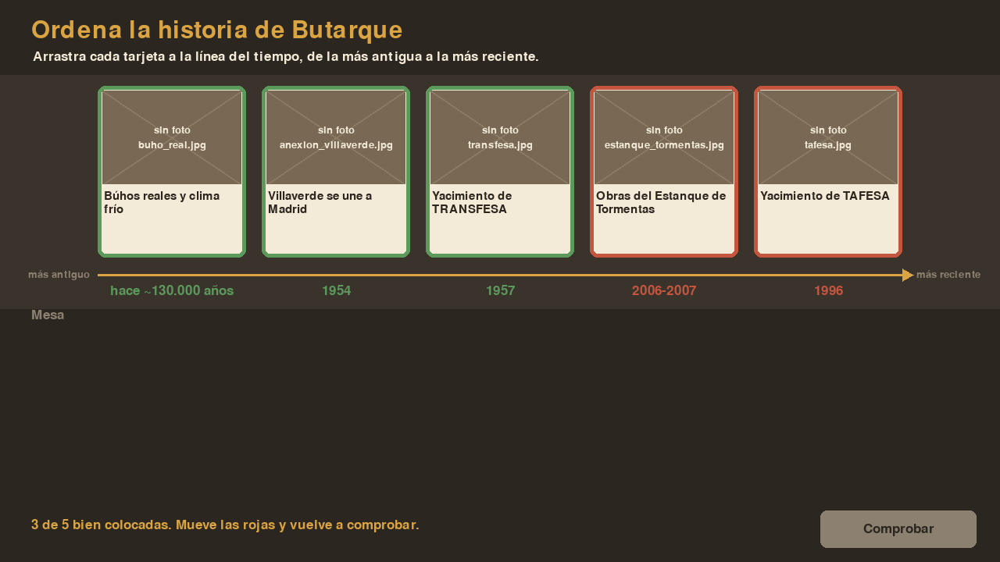
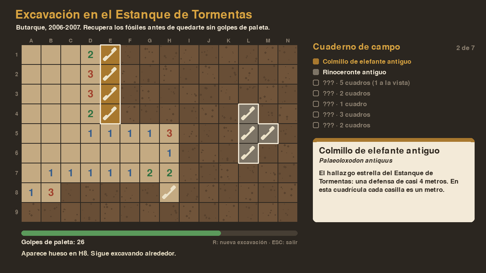
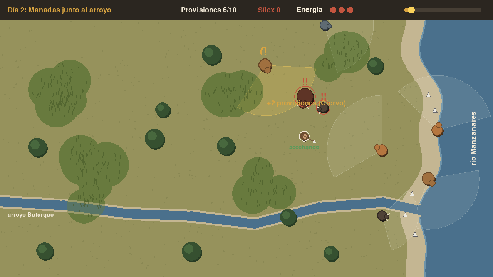

Ordena la historia
La versión digital del puzle de la línea del tiempo: coloca los hitos de Butarque del más antiguo al más reciente.
- Ratón o pantalla táctil
- Unos minutos
Villaverde · Madrid
Hace unos 150.000 años, donde el arroyo Butarque desemboca en el Manzanares, había elefantes antiguos, uros, bisontes y grupos neandertales que cazaban en la llanura. Sus restos aparecieron durante las obras del Estanque de Tormentas. Estos tres minijuegos, programados en Python, cuentan esa historia.

La versión digital del puzle de la línea del tiempo: coloca los hitos de Butarque del más antiguo al más reciente.

Excava la cuadrícula siguiendo las pistas del terreno y recupera el colmillo de casi 4 metros antes de quedarte sin golpes.

Eres un cazador neandertal. Acecha a las presas sin que te vean, recoge sílex en la orilla y cuidado con uros y lobos.